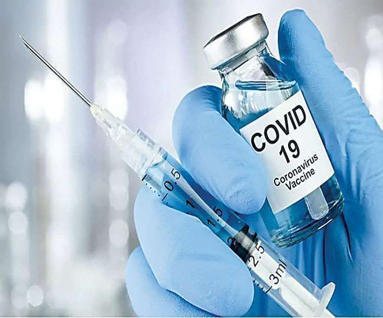

ABOUT COVID-19

PRECAUTIONS AGAINST COVID-19
-
GET VACCINATED!
The world is in the midst of a COVID-19 pandemic. As WHO and partners work together on the response -- tracking the pandemic, advising on critical interventions, distributing vital medical supplies to those in need--- they are racing to develop and deploy safe and effective vaccines. Vaccines save millions of lives each year. Vaccines work by training and preparing the bodys natural defences the immune system to recognize and fight off the viruses and bacteria they target. After vaccination, if the body is later exposed to those disease-causing germs, the body is immediately ready to destroy them, preventing illness. There are several safe and effective vaccines that prevent people from getting seriously ill or dying from COVID-19. This is one part of managing COVID-19, in addition to the main preventive measures of staying at least 1 metre away from others, covering a cough or sneeze in your elbow, frequently cleaning your hands, wearing a mask and avoiding poorly ventilated rooms or opening a window. As of 15 November 2021, WHO has evaluated that the following vaccines against COVID-19 have met the necessary criteria for safety and efficacy: AstraZeneca/Oxford vaccine Johnson and Johnson Moderna Pfizer/BionTech Sinophar COVAXIN Read our Q&A on the Emergency Use Listing process to find out more about how WHO assesses the quality, safety and efficacy of COVID-19 vaccines. Some national regulators have also assessed other COVID-19 vaccine products for use in their countries..
-
WEAR A MASK!
The WHO and the US CDC recommend individuals wear non-medical face coverings in public settings where there is an increased risk of transmission and where social distancing measures are difficult to maintain.[168][169] This recommendation is meant to reduce the spread of the disease by asymptomatic and pre-symptomatic individuals and is complementary to established preventive measures such as social distancing.[169][170] Face coverings limit the volume and travel distance of expiratory droplets dispersed when talking, breathing, and coughing.[169][170] A face covering without vents or holes will also filter out particles containing the virus from inhaled and exhaled air, reducing the chances of infection.[171] But, if the mask include an exhalation valve, a wearer that is infected (maybe without having noticed that, and asymptomatic) would transmit the virus outwards through it, despite any certification they can have. So the masks with exhalation valve are not for the infected wearers, and are not reliable to stop the pandemic in a large scale. Many countries and local jurisdictions encourage or mandate the use of face masks or cloth face coverings by members of the public to limit the spread of the virus.[172]
QUESTIONS ABOUT COVID-19
COVID-19 transmits when people breathe in air contaminated by droplets and small airborne particles containing the virus. The risk of breathing these in is highest when people are in close proximity, but they can be inhaled over longer distances, particularly indoors. Transmission can also occur if splashed or sprayed with contaminated fluids in the eyes, nose or mouth, and, rarely, via contaminated surfaces.
Some of the primary symptoms to look for in a Covid 19 infected person are fever, dizziness, breathlessness, headache, dry cough ( eventually result in phlegm) and in a few cases loss in smell and taste. A few cases have also reported diarrhoea and fatigue.
The virus works by damaging the wall and the lining of the alveolus and capillaries. The debris from the damage, which is plasma protein accumulates on the alveolus wall and thickens the lining. As the walls’ thicken, the transfer of oxygen to the red blood cells is impaired. The thicker the wall gets, the more difficult it gets to transfer oxygen to the red blood cells, which causes difficulty in breathing as the body is running short of oxygen. And the lack of oxygen to the internal organs results in a deficit in the body and impairs the functioning of the organs. At this juncture, the body fights to increase oxygen intake.
VARIANTS OF COVID-19
DELTA VARIANT

OMICRON VARIANT
OMICRON VARIANT
This variant has a large number of mutations, some of which are concerning. Preliminary evidence suggests an increased risk of reinfection with this variant, as compared to other VOCs. The number of cases of this variant appears to be increasing in almost all provinces in South Africa. Current SARS-CoV-2 PCR diagnostics continue to detect this variant. Several labs have indicated that for one widely used PCR test, one of the three target genes is not detected (called S gene dropout or S gene target failure) and this test can therefore be used as marker for this variant, pending sequencing confirmation. Using this approach, this variant has been detected at faster rates than previous surges in infection, suggesting that this variant may have a growth advantage.
TO KNOW MORE